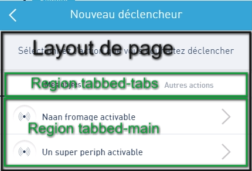

gulpfile.js
"dependencies": {
"backbone": "1.2.3",
"backbone.marionette": "2.4.4",
"d3": "3.5.9",
...
}
"devDependencies": {
"browserify": "~10.0.0",
"express": "^4.13.3",
"gulp-sass": "~2.0.1",
...
},
var TriggerWidget = require('../_sub-apps/trigger-widget');
app.addSubApp('triggerWidget', TriggerWidget, {
container: app.container
});
var TriggerWidgetLayout = require('./views/trigger-widget-layout-view');
...
this.layout = new TriggerWidgetLayout().render();
...
$(this.container).html(this.layout.$el).addClass('is-visible trigger-widget');
Exemple de la page peripheralList

var PeripheralListPage = require('./pages/peripheral-list');
...
var peripheralListPage = new PeripheralListPage({
container : this.layout.getRegion('main'),
...
});
...
var PageLayout = require('../views/tabbed-page-layout-view');
initialize: function(options) {
this.container = options.container;
this.layout = new PageLayout();
this.container.show(this.layout);
...
},
initialize: function(options) {
...
this.initData();
this.initModules();
this.fetchData();
},
Les données sont initialisées depuis la page.
var PeripheralListCollection =
require('../../../_entities/dashboard/peripherals/peripheral-list-collection');
initData: function() {
this.peripheralListCollection = new PeripheralListCollection();
},
Les modules initialisés et affichés dans les regions depuis la page.
var PeripheralList = require('../../../_modules/peripheral-list');
var Tabs = require('../../../_components/tabs');
initModules: function() {
this.initPeripheralList();
this.initTabs();
},
initPeripheralList: function() {
this.peripheralList = new PeripheralList({
collection: this.peripheralListCollection
});
this.layout.getRegion('tabbedMain').show(this.peripheralList.getView());
}, ...
initTabs: function() {
this.tab = new Tabs([
{id : 0, "label": "Mes objets", "isActive": true},
{id : 1, "label": "Autres actions", "isActive": false}
]);
this.layout.getRegion('tabbedTabs').show(this.tab.getView());
},
fetchData: function() {
this.peripheralListCollection.fetch();
},
exemple de la liste de périphériques
==> peripheralListCollection
var Backbone = require('backbone');
var PeripheralListModel = require('./peripheral-list-model');
module.exports = Backbone.Collection.extend({
model: PeripheralListModel,
url: '/dashboard/peripherals?deviceType=triggers'
});
_sub-apps/trigger-widget/router.js
module.exports = Marionette.AppRouter.extend({
appRoutes: {
...
'trigger-widget-peripheral-list': 'peripheralList',
'trigger-widget-other-actions-sms-form': 'smsFormAction',
...
}
});
_sub-apps/trigger-widget/index.js
// ROUTED PAGES ====================
// Display peripheral list
peripheralList: function() {
// init de la page, affiche layout de la sub app, init les modules communs
this.showPage(PeripheralListPage, {});
},
Exemple de la selection d'un périphérique
-- dans le module --
initialize: function(options) {
this.collection = options.collection;
this.listenTo(this.collection, 'change', this.navigateTo);
},
navigateTo: function(model) {
this.trigger('navigateTo', model)
},
Exemple de la selection d'un périphérique
-- dans la page --
this.listenTo(this.peripheralList, 'navigateTo', this.peripheralListNavigate);
peripheralListNavigate: function(model) {
this.parentChannel.trigger('navigate:actionList', model);
},
Exemple de la selection d'un périphérique
-- dans la sub app --
this.listenTo(this.channel, 'navigate:actionList', this.navigateToActionList);
navigateToActionList: function(model) {
this.actionListModel = model;
this.router.navigate('trigger-widget-action-list', { trigger: true});
},